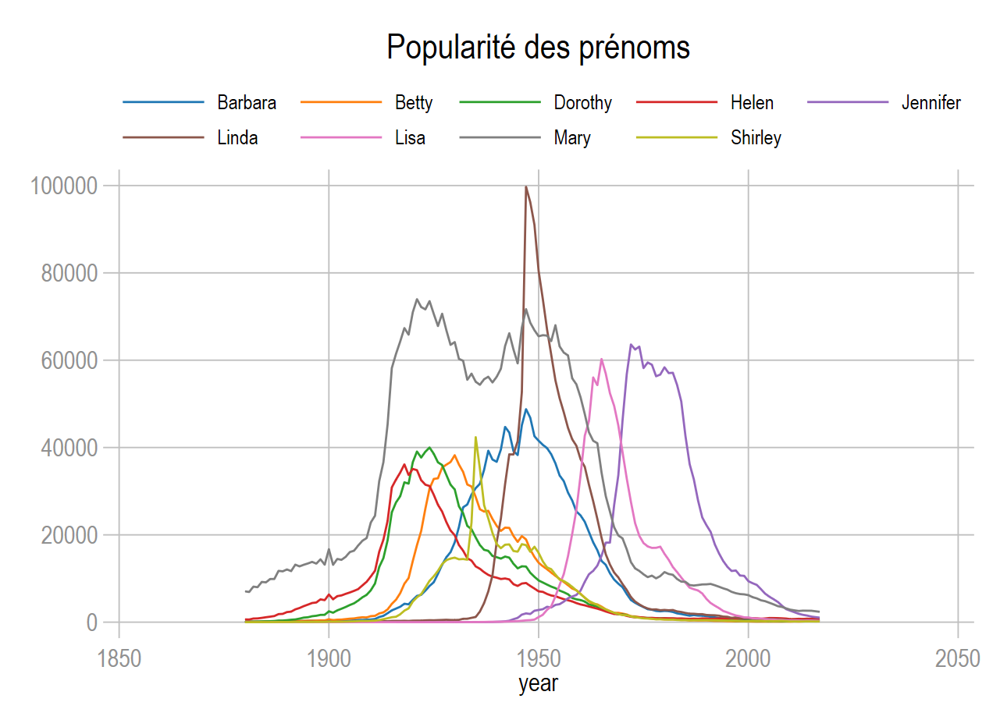

ssc install fabplot
* help fabplotfabplot (NJ.Cox)
La commande fabplot programmée en 2021 par Nj.Cox permet de contrôler efficacement les effets dits spaghetti (courbes) ou paella (nuages de points). J’ai ajouté une option pour modifier les courbes au second plan, NJ.Cox ayant toujours tendance à bloquer l’habillage de ces commandes graphiques. La commande a été renommée fabplot2 et s’installe via github.
J’avais présenté le problème lors de la formation de 2020, mais avec un programme très compliqué. Cette commande très simple, permet de bien contrôler ce problème visualisation en utilisant sur deux objets graphiques l’option by…..pourquoi je n’y avais pas pensé.
Installation
fabplot
Commande d’origine. L’objet en arrière plan n’est pas modifiable.
fabplot2
J’ai juste ajouté l’option backopts. Même principe que l’option frontopts qui modifie l’objet au premier plan.
net install fabplot2, from("https://mthevenin.github.io/stata_graphiques/ressources/fabplot/") replaceExemple
Note J’utilise systématiquement un thème que je génère avec le paquet
grstylede B.Jann.
Je reprends le même exemple que pour la formation, avec la base babynames.
Ouverture de de la base:
webuse set "https://raw.githubusercontent.com//mthevenin/stata_graphiques/master/ressources/fabplot"
use babynames, clear
webuse setEmpilement des 9 courbes
….. C’est illisible
* thème avec grstyle
grstyle init
grstyle set mesh
grstyle set color tableau, n(9)
* Graphique
levelsof name, local(name)
local i = 1
foreach nom of local name {
local j = `i++'
local line `line' line n year if name=="`nom'" ||
local leg `leg' `j' "`nom'"
}
tw `line' , legend(order(`leg') row(2) size(*.8) region(color(%0)) pos(11)) ytitle("") ylabel(0(20000)100000, angle(0)) ///
title("Popularité des prénoms")
Small-Multiple avec fabplot
Avec un graphique de type statique, une solution à priviliégier serait un graphique de type small-multiple en conservant les autres courbes en arrière plan. Avec Stata, ce type de graphique est exécuté avec l’option by().
Syntaxe allégée
fabplot[2] command yvar xvar [if] [in], by(byvar [,byopts]) [frontopts() backopts()] ....
fabplot[2]:fabplotoufabplot2command: line ou scatterby(byvar [,opts)]: indiquer à minima la variable catégorielle qui produira chaque sous graphique. Beaucoup d’options du graphique entre sans cette option, comme les titres ou la couleur du backgroundfrontopts: les options de l’objet graphique en relief, comme la couleur et l’épaisseur de la courbe ou des marqueursbackopts: avecfabplot2seulement, les options de l’objet graphique en arrière plan.
Application
#delimit ;
fabplot2 line n year,
by(name, title("Popularité des prénoms", pos(11)))
frontopts(lw(*2) lc("45 178 125"))
backopts(lw(*.5) lc(gs9))
ytitle("") ylabel(0(20000)100000, labsize(*.8) glw(*.5))
;
#delimit cr